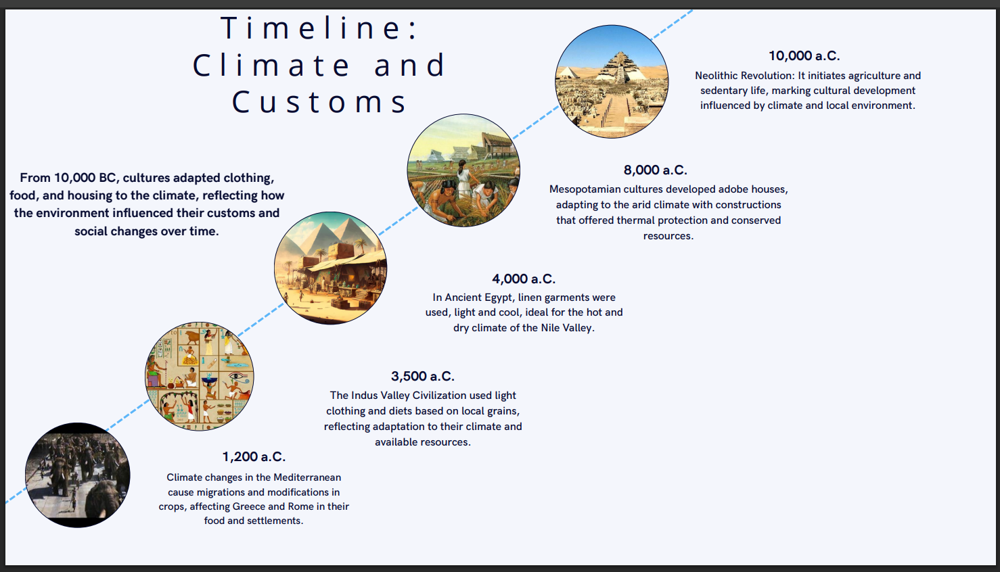

Paleoclimatology
Paleoclimatology is the science that studies Earth's past climates through different natural records, such as ice cores, sediments, corals, and tree rings. Thanks to this discipline, we can understand how the climate has changed over millions of years and what factors have influenced those changes.
Digital Glossary
During our English classes, we were asked to carry out various activities related to paleoclimatology and its derivatives. One of the activities consisted of creating a digital glossary containing words related to paleoclimatology.
Time line
In addition to the digital glossary presented above, we have been asked to create a timeline about the climate and customs of ancient times, since these times had different climates.
Archives
Paleoclimatology is essential for understanding the climatic past of our planet and providing context for current and future changes. By studying the traces that climate has left on Earth, we can better prepare to face the challenges of modern climate change. Here are the files of the activities carried out, in case you wish to review and investigate them more closely.
Download Digital Glossary Download Timeline